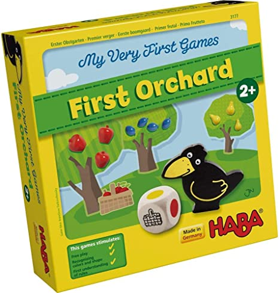
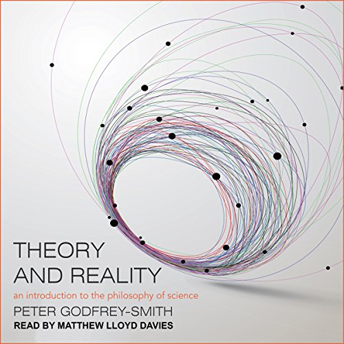

Peter Licari
About
Blog
Archive
Consulting
Writing
Ongoing Projects
YouTube Channel
Pulse of the Polis (Substack)
Comics (Rarely)
Other Things I’ve Made
Resources
R Bloggers
Data and Other Fables
A blog by Peter Licari
Categories
All
(13)
Quarto
(1)
R
(4)
dataviz
(1)
description
(1)
elections
(1)
fiction
(1)
life
(1)
python
(1)
qualtrics
(1)
reflection
(4)
research design
(1)
review
(2)
simulation
(2)
statistics
(1)
surveys
(3)
teaching
(1)
tutorial
(3)
Getting Worse to Get Better
Some thoughts about improving in data science…and bowling, I guess.
reflection
It may come as a surprise to some people who know me, but I actually have other hobbies other than “doing stuff with data.” This post is concerns some experiences I’ve had…
Jun 20, 2024
Peter Licari
What I Learned From My First Non-Academic Conference
Reflections on ODSC East 2024
reflection
This week, I attended the 2024 Open Data Science Conference (ODSC) in Boston, Massachusetts. It was the first conference I attended since Covid
1
and my first non-academic…
Apr 26, 2024
Peter Licari
How Popular Are Birthdays Over Time?
A datacentric way to celebrate turning 30
R
description
dataviz
Here are two fun facts about 30:
Apr 15, 2024
Peter Licari
Some reflections, hopes, and plans for 2024
reflection
life
2023 has just about come to a close. I thought I was due for an audit on how things went and where (I think) things are going.
Dec 30, 2023
Peter Licari
The Traditional Margin of Error When You Have Oversamples in Your Survey is Wrong
Illustrated using Pokemon
R
statistics
simulation
surveys
Not too long ago, pollsters and social scientists on X (the decaying husk of Twitter) found themselves discussing a recent CNN poll detailing President Biden’s job…
Sep 13, 2023
Peter Licari
How to add a Variable Font to a Quarto PDF on Windows
Or: How I was driven completely insane by Google Fonts
R
Quarto
tutorial
This is one of those posts motivated by never
ever
wanting to subject anyone to the insanity that I experienced while struggling through what only
seems
to be a simple idea.
Aug 1, 2023
Peter Licari
What to do when R punches you in the mouth
R
tutorial
Attaining mastery in R is not about avoiding hiccups, but about learning what to do when you’re inevitably confronted with them. However, this is hardly covered in most…
Apr 4, 2023
Peter Licari

Simulating My Daughter’s First Board Game in Python
python
simulation
Children learn as they play. Most importantly, in play children learn how to learn.
Feb 16, 2023
Peter Licari

Book Review: Theory and Reality
review
Theory and Reality
is an ambitious book that aims to accessibly cover a large swath of historical and philosophical ground. In many ways, it lives up to that ambition…
Nov 7, 2022
Peter Licari
Thoughts on the 2020 Election
elections
reflection
I thought I would post my prediction for the election and a few thoughts regarding it more generally. I’ll be peppering in some maps that I’ve made to help illustrate my…
Nov 5, 2020
Peter Licari
How to Do Unequal Randomization in Qualtrics Surveys
surveys
qualtrics
research design
Recently, some coauthors and I were working on a survey experiment in Qualtrics where we were assigning people into 4 different groups. This is something that Qualtrics can…
Aug 5, 2020
Peter Licari
Surveying is a Beautifully Foolish Endeavor
review
surveys
fiction
I binged Hank Green’s
A Beautifully Foolish Endeavor
yesterday and it is, let me tell you, just fantastic. I don’t plan on writing a longer review because I didn’t really…
Aug 3, 2020
Peter Licari
Capturing a PowerPoint/Google Slides Lecture with Open Source Software
tutorial
teaching
A number of schools are either shutting down or transitioning classes to an online format due to the novel corona virus (also known as COVID-19). (UF just let us know…
Mar 10, 2020
Peter Licari
No matching items